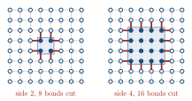

Advanced Quantum Materials 2027 · All lectures · Lecture notes
Session 7. Quantum Many-Body Entanglement and Tensor Networks
7.7 Two dimensions and the area law
Let us now do the same construction in one more dimension. We take a two-dimensional lattice and we group the sites into separate clusters of four sites, called tetramers, instead of pairs. The sites inside a cluster are coupled, but different clusters are not coupled, so the ground state is again an exact tensor product, now of tetramer ground states instead of dimer singlets. The same factorization argument applies. A cluster fully inside \(A\) or fully inside \(B\) gives nothing, and only the clusters that cross the boundary between the two parts contribute to \(S\).
The only difference is geometric. Let us compare a small region \(A\), whose boundary cuts eight bonds, with a much larger region \(A'\), whose longer boundary cuts many more bonds. Since the entropy again gets one contribution per cut bond, \(S\) is now set by the length of the boundary. In two dimensions this length grows when the subsystem grows. This is different from the 1D case of Section 7.6, where the boundary was always two points for any size of the subsystem. This is the central contrast. In one dimension the entanglement entropy of a gapped ground state saturates, and it does not depend on the size of the subsystem. In two or more dimensions it grows with the size of the boundary, \(S_A \sim L_A \sim \partial A\) and \(S_{A'} \sim L_{A'} \sim \partial A'\), so \(S_{A'} > S_A\) for the larger region. Figure 7.2 shows the two cases next to each other, with the cut bonds marked, so that we can count them by eye in each case.

This behavior is called the area law. For the ground state of a gapped and local Hamiltonian, the entanglement entropy of a subsystem scales with the size of the boundary between the subsystem and the rest of the system, which is a fixed number of points in 1D, a length in 2D and an area in 3D,
\[S_A \;\sim\; \alpha\, |\partial A|, \tag{7.9}\]
and not with the volume of \(A\). This is a strong restriction. A random state taken uniformly from the full Hilbert space of dimension \(2^L\) would usually have \(S_A\) close to its maximum value, which is \(|A|\log 2\) for a spin-1/2 subsystem of size \(|A|\), and this is called a volume law. In this sense, gapped ground states are very far from typical states. They live only in the very small part of the Hilbert space that satisfies the area law. The dimer and tetramer models above are exactly in this part, and realistic gapped Hamiltonians are approximately in it.
In the tetramer model of two dimensions we double the linear size of the region \(A\). How does \(S_A\) change?
Show the answers
- A. ✓ True
This is true. The entropy counts the cut tetramers, and in two dimensions their number is proportional to the length of the boundary. For a square of side 2 or 4 the perimeter is 8 or 16, so the entropy doubles.
- B. ✗ False
This is false. The square of side 2 has 4 sites and the one of side 4 has 16, but the clusters inside the square are not cut. Only the perimeter, 8 and then 16, counts, so the factor is 2 and not 4.

A square of side 2 and one of side 4 on a square lattice. The red bonds are cut, and their number follows the perimeter. - C. ✗ False
This is false. In one dimension the boundary is two points and the entropy is constant. In two dimensions the boundary grows with the size, so a gapped state still has an entropy that grows.
A gapped ground state in three dimensions follows the area law (7.9). A cube of side \(\ell\) has an entropy that grows as
Show the answers
- A. ✗ False
This is false. This is the volume law. For \(\ell=100\) the cube has \(10^6\) sites but its surface cuts only \(6\times10^4\) bonds, and the area law lets each bond carry at most \(\log2\).
- B. ✓ True
This is true. The boundary of a cube is made of its six faces, which have an area proportional to \(\ell^2\). In (7.9) the entropy follows this area and not the volume \(\ell^3\).
- C. ✗ False
This is false. A constant is the result in one dimension, where the boundary of a block is two points. For a cube of side 2 and of side 4 the surface cuts 24 and 96 bonds, so the number of cut bonds grows.